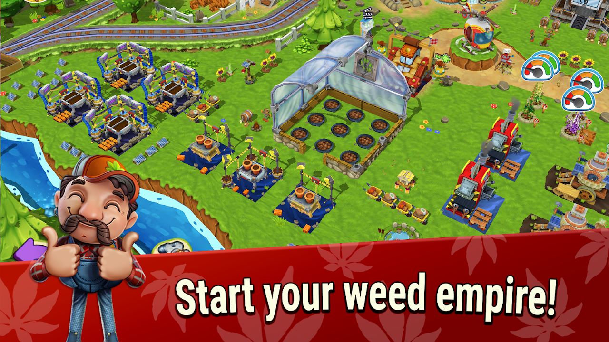
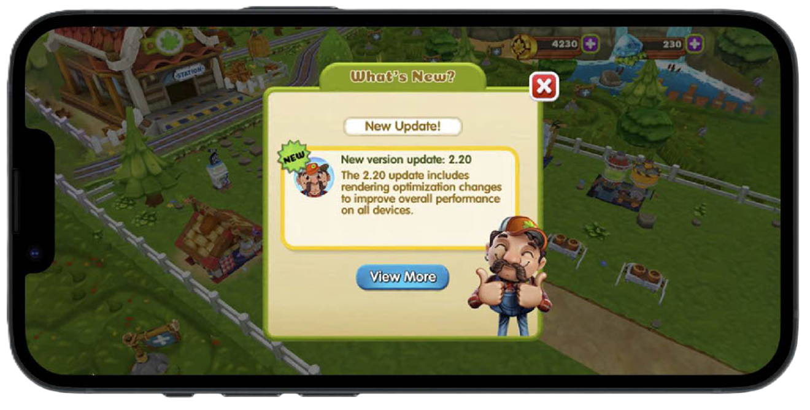
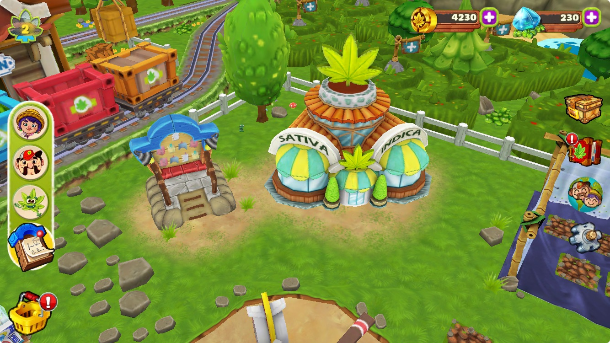
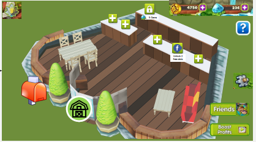
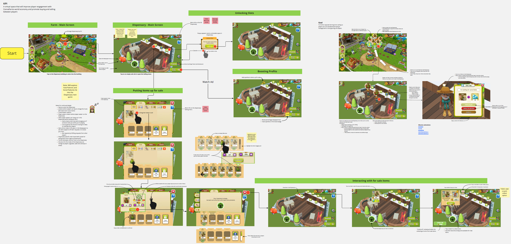

Canna Farm

Role: UX design, Product Manager
Overview: A weed-farming management game blending casual and idle mechanics. Led design and production during live-ops, focusing on user onboarding, UX and progression system updates to improve KPIs.
Below are two features I designed on CannaFarm: the Notice Board and the Dispensary.
Case Study: Notice Board Feature
Feature Overview
The Notice Board centralizes game updates, social interactions, and promotional offers in one place. It was built to improve player retention, engagement, and monetization.
Problem Statement and Goals
Problem: Players lacked a unified interface for accessing social features, game updates, and promotions.
- Increase player retention through timely updates.
- Enhance social connectivity with features like Discord integration.
- Boost revenue through targeted special offers.
Key Features
- Social Page: The default page for social interactions, including Discord integration and social boosts.
- News Page: Highlights updates, events, and promotional offers.
- Popups on Login: Contextual multi-page popups for timely updates.
Design Process
- Research: Identified player pain points and gathered stakeholder feedback.
- Screen flows: Created detailed wireframes and mapped the user's path.
- Iteration: Refined navigation flow and functionality.
- Analytics: Tracked retention, engagement, and revenue.
KPIs: Increase social interactions and task completions, and improve conversion rates for special offers.
Wireframes and Screen Flows


Final In-Game Popup

Case Study: Dispensary Feature
Feature Overview
The Dispensary is a 3D in-game hub where players take part in the CannaFarm economy by buying and selling items. Players can sell products to other players and to visiting NPC Patrons. The feature was meant to draw players into the online community and grow CannaFarm's social features.

Problem Statement and Goals
Problem: Players lacked a compelling, immersive space for engaging with the CannaFarm economy.
- Create a virtual space to enhance player engagement.
- Promote buying and selling of player-produced items.
- Strengthen the in-game economy through interaction with NPCs and other players.

Key Features
- 3D Hub: A virtual cannabis café for buying and selling player items.
- NPC Transactions: Sell items to visiting NPC Patrons.
- Drag-and-Drop Interface: Simplified UI for selecting and selling items.
- Player Economy: Highlights and encourages trade of player-produced goods.
KPIs: Improve retention, incentivize players to buy and sell in-game items with other players, and increase engagement with CannaFarm's in-game economy.
Wireframes and Screen Flows
